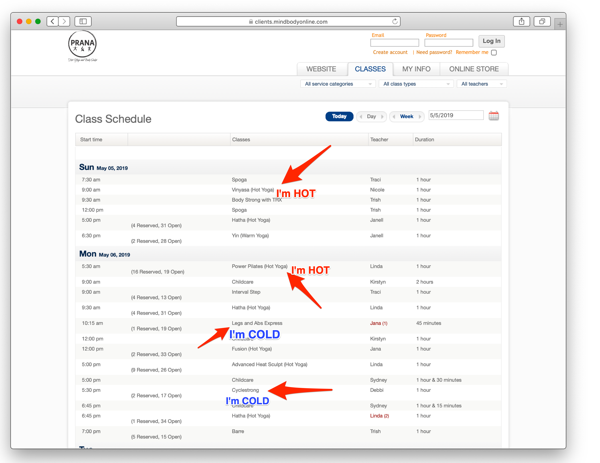
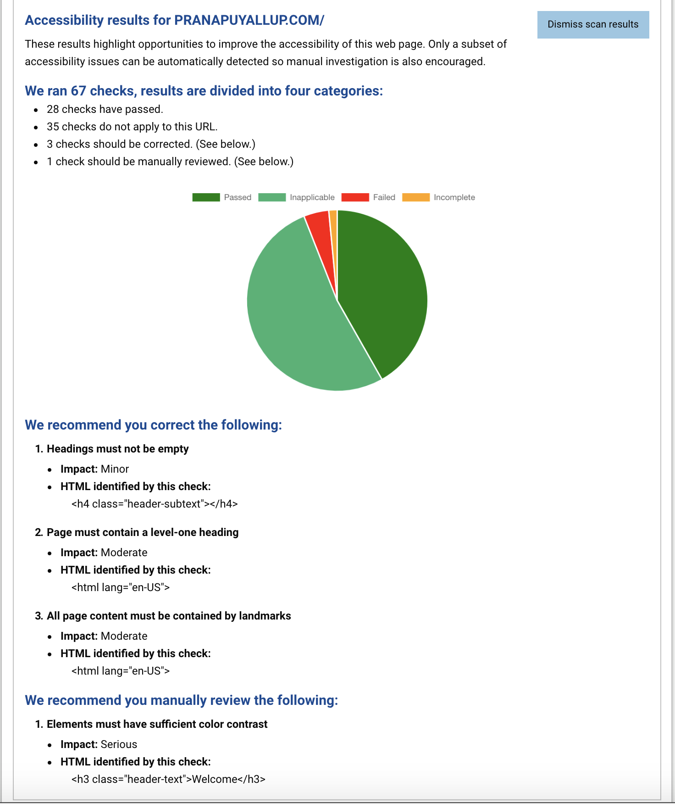
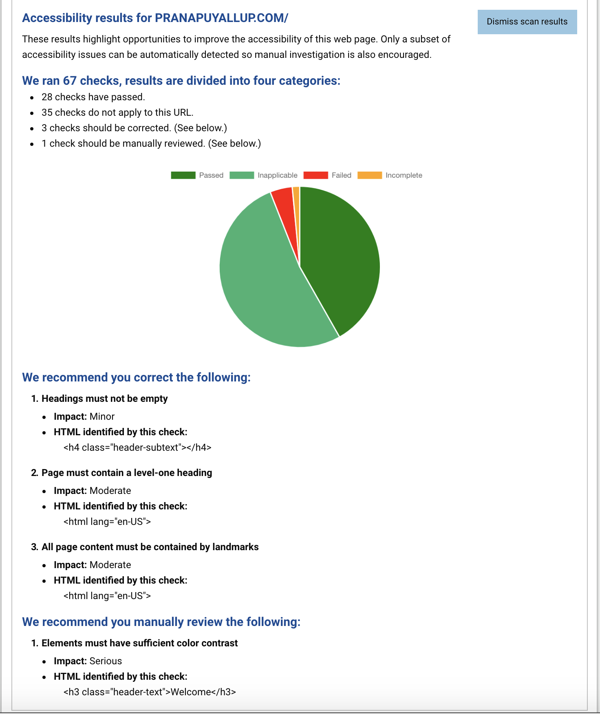

Web Accessibility
What is Web Accessibility?
Accessibility is our topic of discussion this week! Web accessibility plays an important role in how we view the web today. It is important because websites need to provide equal access and opportunity to those who have disabilities such as visual, hearing, motor, or cognitive. It is our job as web developers to ensure that all users have accessible tools to have a better web experience.
Web accessibility is not only for users with disabilities, but those with challenges such as broken hand, slow internet connection and the younger crowd that do not know how to operate a webpage. We also have to consider the older crowd that may not undertstand how to change input modes on a smartphone for easier visibility. The fact is, Web accessibility is meant for everyone and as technology advances, we always need to be prepared!
What website did you use?
Prana Hot Yoga & Body SculptWhat's the purpose and intended audience of the site?
Prana Hot Body and Sculpt is a fitness studio where people can become members and choose from a variety of workout classes lead by fitness instructors. This site promotes what type of classes are available, schedule, pricing and a summary of each instructor at the facility. Great place to go if you want to shape up and tone for summer!
What tools/standards did you use to evaluate the site?
Techniques and Failures for Web Content Accessibility Guidelines 2.0
- G111: Using color and pattern
- G55: Linking to definitions
- ADAscan- A scan for web pages for accessibility issues
This is a website that advertises classes that are provided to the public, they should highlight with color the different types of classes. First off, they have Yoga, Body Sculpt and Pilates performed in a hot room with temperatures as high as 104. They should highlight this type of workout with a red color, this also can be used to highlight this class on their schedule. They also have weight lifting, TRX, cardio and Interval Step in a cold room that is mainly air conditioned, in these workouts, it should be advertised with blue enhancements to focus on its environment. This will help those that need help distinguishing types of classes that are best suited for their physical capabilities.
When offering classes to the public, it is key, for users to understand what workout or exercise, they will be conducting. Most individuals are not familiar with certain workouts and the terminology used to describe them such as TRX, do you know what that is? I didn't, therefore, I recommend they use links to direct to a summary of the workout or a video showing how it is performed. Included with the video, there needs to be subtitles to those that are possibly deaf to help them better understand the details of the workout.
Scan results
 

Bottom line
Web Accessibility is a way to have everyone understand, navigate and make use of the web while not experiencing difficulties.
Web developers strive to make the web welcoming and convenient for all!